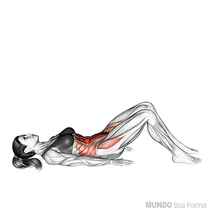
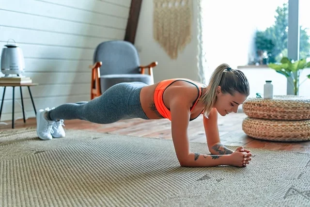
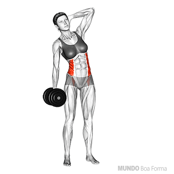
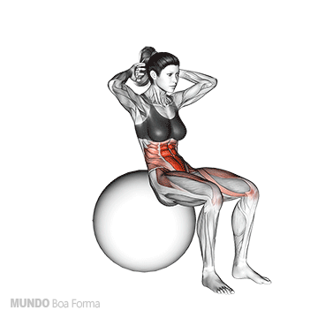

Abdominal inferior

4 séries | 10 repetições
Prancha isométrica ou ponte

Manter nessa posição de 20 a 30 segundos | Repetir 3 ou 4 vezes.
Flexão lateral do tronco com o auxílio de halteres CUIDADO!!

4 séries | 10 repetições
exercicios que precisam de equipamentos:
Abdominal supra com auxílio de halteres, anilha ou bola medicinal

4 séries | 10 repetições
Tração de dorso

3 séries | 10 repetições
Abdominais sobre a bola para pilates

5 séries | 15 repetições